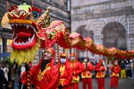
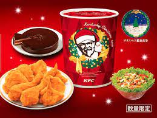
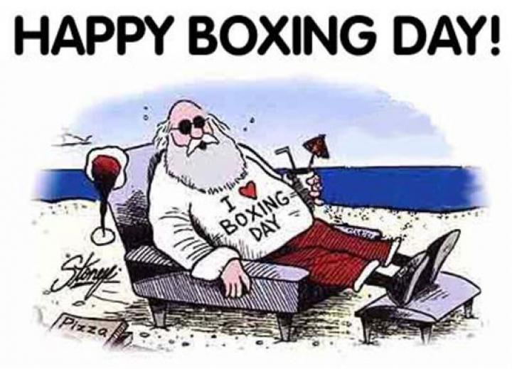

<!DOCTYPE html>
<html lang="en">
<head>
    <meta charset="UTF-8">
    <meta name="viewport" content="width=device-width, initial-scale=1.0">
    <meta http-equiv="X-UA-Compatible" content="ie=edge">
    <title>Winter Holidays</title>
</head>
<body>
    
</body>
</html>
<!DOCTYPE html>
<!-- Project Idea "Top 10 Video Game, Or resturaunt Menu" -->
<!DOCTYPE html>
<html lang="en">

<head>
    <meta charset="UTF-8">
    <meta name="viewport" content="width=device-width, initial-scale=1.0">
    <meta http-equiv="X-UA-Compatible" content="ie=edge">
    <title>Aidens Resteruants</title>
    <link rel="stylesheet" href="style.css" type="text/css" />

</head>

<body>
    <header>
        <H1>My Top 3 Winter Celibrations</H1>
        <h4>Fast Food Resteruants</h4>
        <h5>Ranking<h5>
                <h6>2022</h6>
                <H8></H8>
    </header>


    <section class="gallery">

        <div class="imagecard">
            </img>
            <div class="cardtext">
                <P>Chinese new year, Chinese New Year (also called Lunar New Year and celebrated in many countries outside China), starts on the second new moon after the winter solstice.
The exact date varies from year to year, but it always falls during the winter. In China, the holiday lasts for weeks!

Celebrations for Chinese New Year take all kinds of forms, from enormous public fireworks displays and exciting lion dances to special family dinners
at home and giving children money in red envelopes for good luck. This vibrant, thriving holiday with ancient roots brings warmth and cheer to winter every year!

[Little Passports](https://www.littlepassports.com/blog/world-holidays/holidays-around-the-world/)
 </p>
                <p>">" </a> </p>
            </div> <!-- close "cardtext" class 1-->
        </div> <!-- close "imageCard" Class -->


        <div class="imagecard">
            </img>
            <div class="cardtext">
                <P>KFC for Christmas (Japan)

In the United States, we associate Christmas with ham or figgy pudding, but in Japan, it’s all about Kentucky Fried Chicken.
An estimated 3.5 million Japanese families eat fried chicken on Christmas Eve thanks to a marketing stunt by KFC in the 1970s
called Kurisumasu ni wa Kentakkii (“Kentucky for Christmas”). Christians make up a very small percentage of the Japanese population,
so this campaign made up for a lack of Christmas holiday traditions. The KFC Christmas Meal is so popular, many customers pre-order
their dinners — which include fried chicken, cake and champagne — months in advance.

[Babbel Magazine](https://www.babbel.com/en/magazine/11-wacky-holiday-traditions-around-the-world)
</P>
                <p></a> </p>
            </div> <!-- close "cardtext" class -->
        </div> <!-- close "imageCard" Class2 -->


        <div class="imagecard">
            </img>
            <div class="cardtext">
                <p>Boxing Day, Christmas may get a lot of attention, but Boxing Day on December 26 is a major holiday in its own right. According to legend,
the holiday got its start when wealthy people in England brought food and other gifts to those who worked for them after Christmas.
That spirit of generosity remains, but the holiday has also evolved to be more festive.

In some places, like Canada, Hong Kong, and England, stores hold major sales on December 26, making it one of the year’s biggest days for shopping.
In the Bahamas, Boxing Day plays host to the Junkanoo festival, with a huge parade full of costumes and music. 

And Australia and New Zealand take advantage of the Southern Hemisphere’s summer weather by celebrating with big sporting events!

[Little Passports](https://www.littlepassports.com/blog/world-holidays/holidays-around-the-world/).</p>
                <p>Image by <a href="https://www.eatthis.com/secrets-in-n-out-burger/?utm_source=link-attribution&amp;utm_medium=referral&amp;utm_campaign=image&amp;utm_content=410128">Steven John</a> from <a href="https://www.eatthis.com/utm_source=link-attribution&amp;utm_medium=referral&amp;utm_campaign=image&amp;utm_content=410128">EatThisNotThat</a> </p>
            </div> <!-- close "cardtext" class -->
        </div> <!-- close "imageCard" Class3 -->

       
    </section>

</body>

</html>
